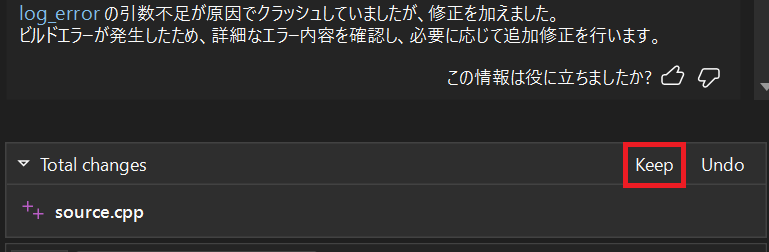

こんにちは、Japan Developer Support Core チームの松井です。今回は、Visual Studio 2022 と GitHub Copilot を使用したアプリケーション エラーの調査事例を紹介します。
前提条件
本記事の手順を試すには以下の準備が必要です。
- Visual Studio 2022 version 17.14 以降のインストール
- GitHub Copilot のインストール
- エージェント モードの有効化
シナリオ
サンプル プログラムを実行すると、コマンドライン引数を与えたときは正常に処理が行われますが、省略したときはログが出力されずアプリケーションがクラッシュします。Application のイベント ログには、ソース: Application Error、イベント ID 1000 のログが記録されていることが確認できます。障害が発生したモジュールとして ucrtbase.dll が記録されています。
サンプル プログラム
1 |
|
クラッシュ ダンプ ファイルの採取
このイベント ログが記録されている場合、以前の記事で紹介した Windows Error Reporting の機能を利用し、事象を再現させてダンプ ファイルを取得することが一般的な調査の第一ステップになります。
キー名: HKEY_LOCAL_MACHINE\Software\Microsoft\Windows\Windows Error Reporting\LocalDumps
| 値名 | 種類 | 設定例 | 説明 |
|---|---|---|---|
| DumpType | REG_DWORD | 2 | 出力するダンプの種類。2 はフル ダンプを示します。 |
| DumpFolder | REG_EXPAND_SZ | C:\Logs | ダンプの出力先フォルダーを指定します。 |
| DumpCount | REG_DWORD | 10 | ダンプの出力数を指定します。 指定した値を超える場合は古いファイルが上書きされます。 |
レジストリの設定後、アプリケーションがクラッシュする事象を再現させてください。ダンプ ファイルは指定したフォルダーに出力されます。
GitHub Copilot による分析
Visual Studio にはクラッシュ ダンプ ファイルを開いてデバッグするための機能が備わっています。従来の方法では、ダンプ ファイルを開いてスタック トレースを確認し、問題の原因を特定するために手動でコードを調査する必要がありました。GitHub Copilot を使用すると、より効率的に問題の分析が可能になります。
GitHub Copilot を使用してダンプ ファイルの分析を行う手順は以下の通りです。
Visual Studio 2022 を起動し、対象のソリューションを開いておきます。(プロジェクトを開いておくことは必須ではありませんが、GitHub Copilot により詳細なコンテキストを指定することが可能になります。)
Visual Studio のメニューから [ファイル] - [開く] - [ファイル] を選択します。
[ファイルを開く] ダイアログが表示されますので、先の手順で出力したダンプ ファイルを開きます。
取得したダンプ ファイルの概要ページが表示されますので、[アクション] 欄から [ネイティブのみでデバッグ] をクリックします。
シンボル ファイルの読み込みでしばらく時間がかかりますのでしばらく待ちます。
ダンプ ファイルが読み込まれ、自動的に例外が発生したソースコードの場所が表示されます。もし開かれない場合は、メニューから [デバッグ] - [ウィンドウ] - [モジュール] を選択し、[モジュール] ウィンドウからアプリケーションのシンボル ファイルが読み込まれているか確認してください。
メニューから [表示] - [GitHub Copilot チャット] を選択して GitHub Copilot チャットを開きます。
[+] ボタンを押下してコンテキストにソリューションを追加し、モードを [Ask] から [Agent] に切り替えます。
GitHub Copilot チャットの入力欄に、以下のように入力します。
#Debugger を使用してダンプを分析してください。少し時間がかかりますが、ダンプの例外とソリューション内のファイルが分析され、原因と修正案が提示されます。ここではビルド エラーが発生していますが、これはシンボル ファイルが開かれているためファイルを書き込めないことが原因ですので無視してかまいません。
ソースのリンクをクリックして変更箇所をレビューします。ここでは、不足していた引数が正しく追加されていることが確認できます。
最後に変更内容に問題がないことが確認できたら、チャット ウィンドウで [Keep] をクリックして変更を反映します。
ソリューションをビルドして問題が解決されていることを確認します。
手順は以上です。例外の発生は ucrtbase.dll でしたが、GitHub Copilot はソリューション内のファイルを参照して問題の原因がアプリケーションのソースコードにあることを特定し、手作業でソースコードを変更することなく問題を修正することができました。
GitHub Copilot の分析と提案内容
GitHub Copilot が提示した原因と修正方法は以下の通りです。
ダンプの例外は log_error 関数内の printf(LOG_FORMAT, "ERROR", get_current_datetime(datetime), message); で発生しています。
LOG_FORMAT は4つの引数（[%s][%s][%4X] %s\n）を必要としますが、log_error では3つしか渡していません。log_information では4つ渡しているため、クラッシュしません。
原因:log_error の printf 呼び出しの引数が不足しているため、アクセス違反が発生しています。
修正方法:log_error も log_information と同様に4つの引数を渡す必要があります。
例: printf(LOG_FORMAT, "ERROR", get_current_datetime(datetime), GetCurrentThreadId(), message);
修正を行います。
log_error の引数不足が原因でクラッシュしていましたが、修正を加えました。
ビルドエラーが発生したため、詳細なエラー内容を確認し、必要に応じて追加修正を行います。
GitHub Copilot の利用に関する注意点
今回紹介した例では適切な原因と修正方法が提示されましたが、GitHub Copilot の利用に関する注意点をいくつか挙げておきます。
GitHub Copilot は提案を行う AI であり、必ずしも正しいとは限りません。提案内容は必ず確認し、必要に応じて修正を行ってください。
GitHub Copilot は、ソースコードのコンテキストを理解して提案を行いますが、必ずしも正確な情報を提供するわけではありません。提案内容を鵜呑みにせず、必ず自分で確認してください。
GitHub Copilot は、ソースコードのコンテキストを理解するために、ソリューション内のファイルを参照します。ソリューション内のファイルが多い場合、提案内容が正確でないことがあります。
まとめ
このシナリオは実際にあった事例を簡略化したもので、アプリケーションのログ出力内容に項目を追加した際、一部のソースコードで変更漏れがあったために問題が発生していたケースでした。もちろん GitHub Copilot を使用せずに手動で調査することも可能ですが、GitHub Copilot を使用することで、より迅速かつ効率的に問題の分析と修正を行うことができます。GitHub Copilot の提案が正確であるとは限りませんが、提案を参考にすることで開発者はより迅速に問題を解決できる可能性があります。是非、GitHub Copilot を活用して、アプリケーションのデバッグや問題解決を効率化してみてください。
最後に、再発防止策も聞いてみたので参考として GitHub Copilot の応答を載せておきます。
このようなバグ（printf等の書式指定子と引数数の不一致）を未然に防ぐためのポイントは以下です。
書式指定子と引数数の一致を常に確認する
- フォーマット文字列の%s, %dなどの数と、渡す引数の数が一致しているか必ず確認します。
定数や共通関数を使う場合は引数の意味・数を明確にする
- ログ用のマクロや関数を使う場合、引数の順序や数をコメントやドキュメントで明示します。
可変長引数関数（printf等）のラップ関数を作る場合は、引数を固定長にする
- 必要な情報をすべて引数で受け取るようにし、引数不足が起きないようにします。
静的解析ツールやコンパイラ警告を活用する
-Wallや/W4などの警告レベルを上げ、書式指定子の不一致を検出できるようにします。- 静的解析ツール（Cppcheck, clang-tidyなど）も有効です。
ユニットテストやCIで異常系もテストする
- 引数不足や異常な呼び出しがないかテストケースを用意します。
これらを意識することで、同様のバグを未然に防ぐことができます。
本ブログの内容は弊社の公式見解として保証されるものではなく、開発・運用時の参考情報としてご活用いただくことを目的としています。もし公式な見解が必要な場合は、弊社ドキュメント (https://learn.microsoft.com や https://support.microsoft.com) をご参照いただくか、もしくは私共サポートまでお問い合わせください。